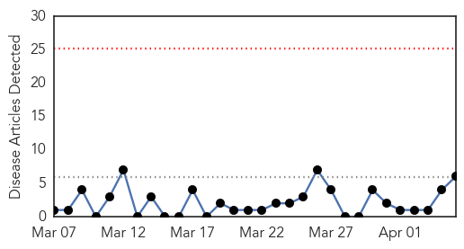
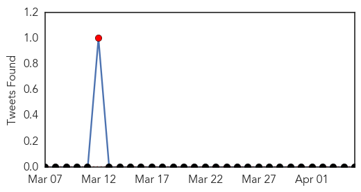
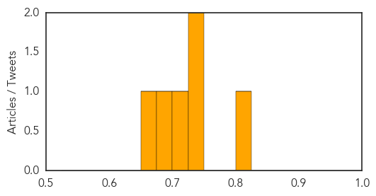

Hepatitis
30-Day Web Trend
0 alerts, 0 warnings

30-Day Twitter Trend
1 alerts, 0 warnings

Article Locations
Article Confidences
Top Articles:
- 0.825
- Death toll in Chile floods rises to 25
- 0.746
- Chilean President visits flood-hit north, vowing to rebuild region
- 0.740
- Gulf Daily News World News Chile flash floods kill 25 with 101 missing
- 0.706
- Making Solano County a healthy place
- 0.678
- Chile's Bachelet visits flood-hit north after 25 killed
- 0.665
- Chile's president visits flood-hit north after 25 killed, vows to rebuild Atacama region
Top Tweets:
-
No tweets found for Apr 05, 2015
Measles
30-Day Web Trend
0 alerts, 0 warnings

30-Day Twitter Trend
4 alerts, 0 warnings
Article Locations
Article Confidences
Top Articles:
- 0.993
- Health professionals concerned about unvaccinated children
- 0.991
- CDC advises vaccinations for summer vacations
- 0.882
- Measles outbreak prompts hundreds on Peninsula to take their best shot -- Port Angeles Port Townsend Sequim Forks Jefferson County Clallam County Olympic Peninsula Daily news
- 0.608
- Personal Liberties and Public Safety
- 0.529
- The healthiest countries in the world
Top Tweets:
-
No tweets found for Apr 05, 2015